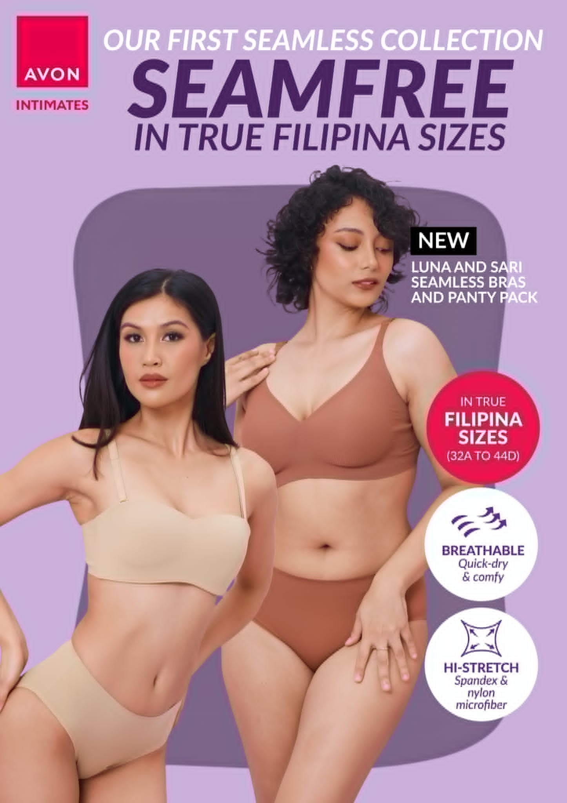
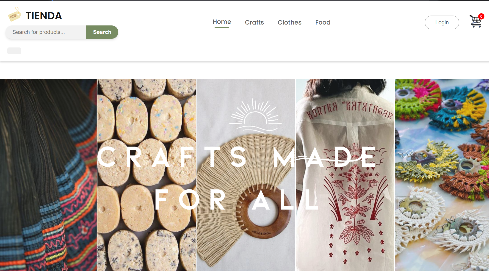
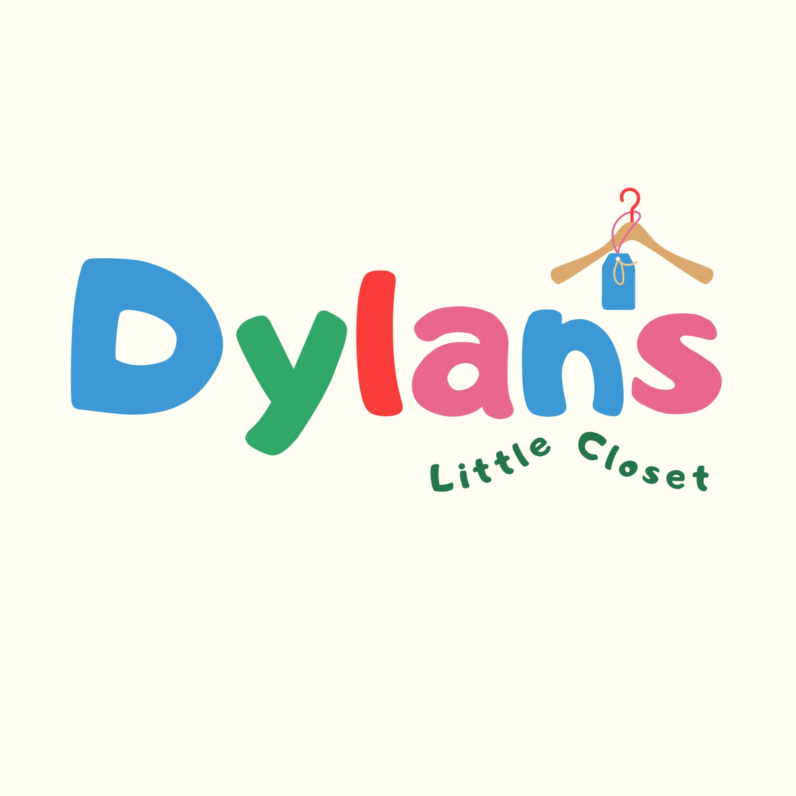
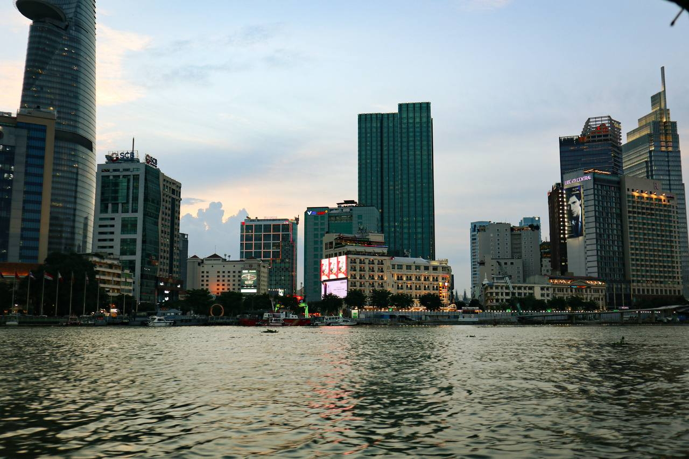
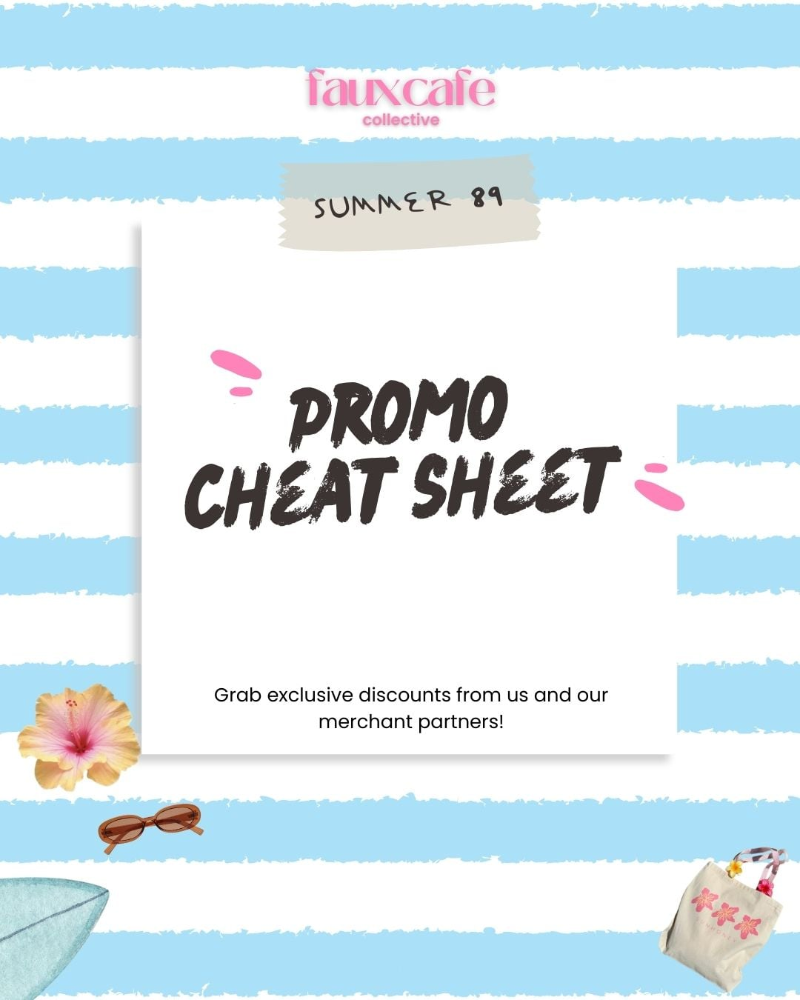
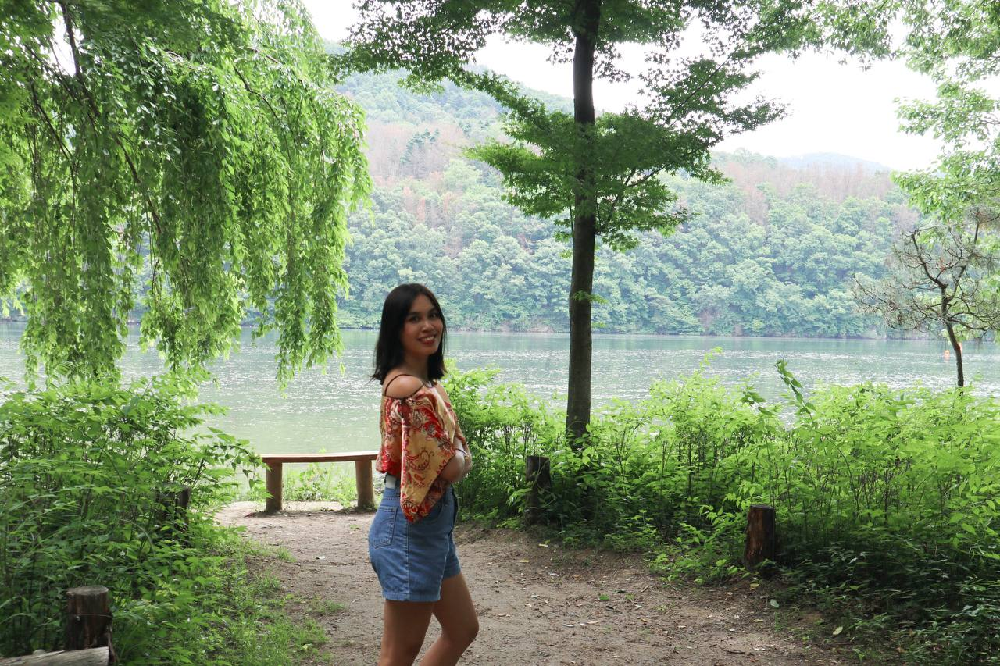
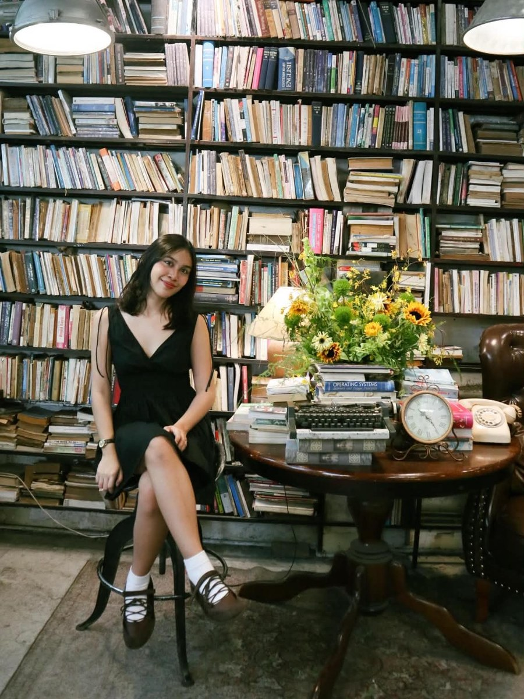

hihi, i’m ✿
Marie Zendee🍓
Graphic Artist|
Marie Zendee is a multidisciplinary creative building visual design, photography and brand work with clarity, softness and a more polished digital presence.



selected practicevisual · brand · photo
01 · visual designs
Visual work that feels
soft, clear and intentional.
A more refined showcase of campaigns, layouts, digital experiences and brand assets — presented with space, motion and cleaner storytelling.
01 / 04
Tienda
A curated digital storefront direction shaped around product discovery, visual hierarchy and a gentle editorial rhythm.


02 · photography
little places,
kept forever.
Travel, landscape and quiet details. The archive opens like a small letter, then turns into a glass photo shelf you can swipe, wheel or drag through.
click the envelope · then scroll the photos
03 · branding
Personality, without
losing polish.
The identity keeps personality through small accents while the overall direction leans more editorial, minimal and glass-like.
Marie
Zendee
brand directionSoft personality.
Clear systems.
Apple-like polish.
Clear systems.
Apple-like polish.
whitish pink#FFF2F7
white#FFFFFF
blackish plum#231A1F
display accentBootzy
interfacesystem / SF-style sans
materialsglass · soft gradients · fine borders
motiontransform + opacity · reduced-motion aware
04 · projects
Projects with enough
room to tell the story.
Each project opens in a focused glass case-study sheet so the work can speak with more context, less clutter and smoother transitions.
05 · creative process
Thoughtful from the first
idea to the final pixel.
A lightweight process keeps the work consistent without flattening the personality that makes each project feel distinct.
Understand
Clarify audience, message, constraints and what the design actually needs to accomplish.
Shape
Build the hierarchy, direction, references and reusable visual language before polishing.
Refine
Reduce noise, test spacing and interaction, then keep only the details that strengthen the work.
FigmaCanvaPhotoshopLightroomHTMLCSS
06 · about me
Thoughtful visuals,
made to communicate clearly.
Hi, I’m Marie Zendee. I work across visual development, branding, campaigns, social content and creative concepts. I like work that feels warm and memorable, while still solving the communication problem in front of it.
what I care aboutclarity · feeling · detail
working stylecollaborative · thoughtful · practical
🎨 visual content📣 campaigns📱 social✨ creative direction
download résumé ↓
don’t be shy ♡
Let’s make something
lovely together.
Available for visual design, brand support, creative content and digital projects.